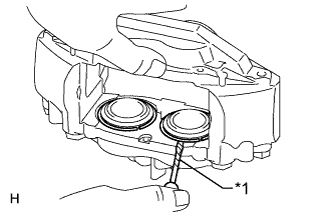
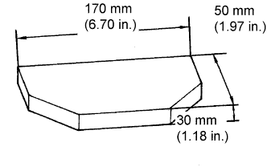
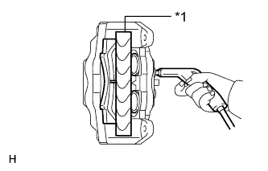
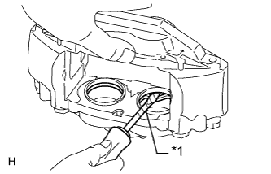

FRONT BRAKE > DISASSEMBLY |
| 1. REMOVE FRONT DISC BRAKE SET RING |
|  |
Using a screwdriver, remove the 4 front disc brake set rings from the 4 cylinder boots.
| *1 | Protective Tape |
| 2. REMOVE CYLINDER BOOT |
Using a screwdriver, remove the 4 cylinder boots from the disc brake cylinder.
| 3. REMOVE FRONT DISC BRAKE PISTON |
Install one of the front disc brake pads.
|  |
Install a wooden plate between the front disc brake pistons of the disc brake cylinder to prevent the front disc brake pistons from jumping out.
Using an air gun, gradually apply air and remove the 2 front disc brake pistons from the disc brake cylinder.
|  |
Remove the front disc brake pad and wooden plate.
| *1 | Wooden Plate |
Temporarily install the 2 front disc brake pistons that were removed. Then install the front disc brake pad to the side in which the 2 front disc brake pistons are temporarily installed.
Install a wooden plate between the front disc brake pistons of the disc brake cylinder to prevent the front disc brake pistons from jumping out.
Using an air gun, gradually apply air and remove the 2 front disc brake pistons from the other side of the front disc brake cylinder.
| 4. REMOVE PISTON SEAL |
|  |
Using a screwdriver, remove the 4 piston seals from the disc brake cylinder.
| *1 | Protective Tape |
| 5. REMOVE FRONT DISC BRAKE BLEEDER PLUG CAP |
| 6. REMOVE FRONT DISC BRAKE BLEEDER PLUG |